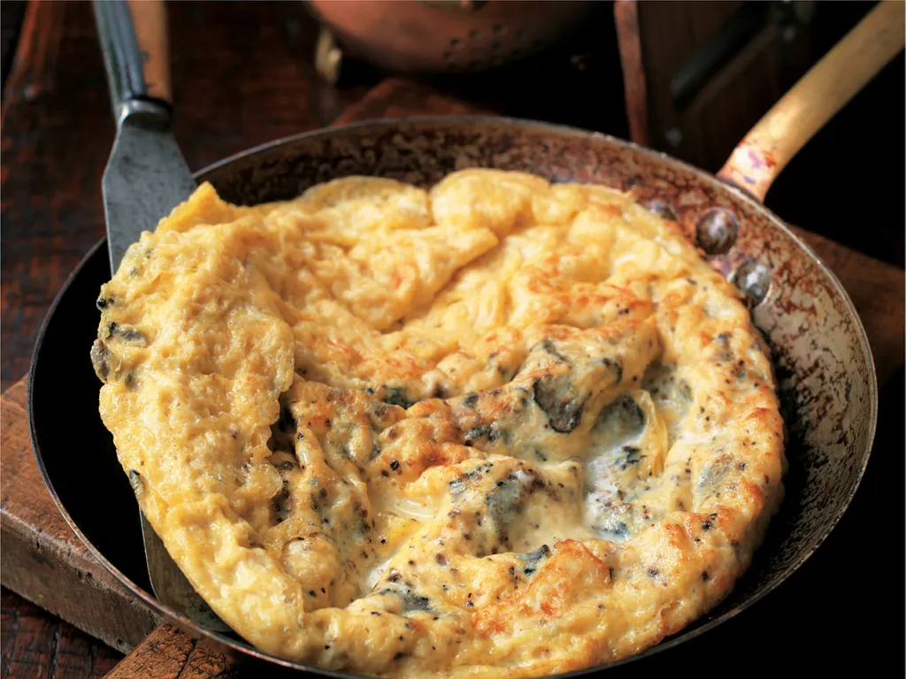

Frittata al tartufo is a traditional Umbrian and Istrian dish made with a combination of eggs, black truffles, olive oil, salt, and black pepper. This simple dish is made by pouring beaten eggs into a pan with hot olive oil, and then adding thin shavings of truffles, salt, and pepper to the pan.
Meal prep time : 20 minutes
Servings : 4